|
R-Plot Version 2.0 |
|
© 2012 – 2020, Dr. J. Rathlev, D-24222 Schwentinental
|
Desktop
Klicken auf einen Bereich des Bildes führt zur dazugehörigen Information.
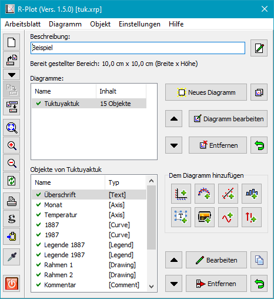
Hauptmenü
- Arbeitsblatt
- Neu - Neuanlegen eines Arbeitsblatts
- Laden .. - Laden eines gespeicherten Arbeitsblatts (F3)
- Zuletzt verwendet .. - Liste der zuletzt verwendeten Arbeitsblätter
- Speichern - Speichern eines geänderten Arbeitsblatts (F2)
- Speichern als .. - Speichern eines Arbeitsblatts unter neuem Namen
- Eigenschaften .. - Eigenschaften des Arbeitsblatts bearbeiten
- Drucken .. - Arbeitsblatt ausdrucken
- Exportieren
- als Postscript - Arbeitsblatt als EPS exportieren
- in die Zwischenablage - Arbeitsblatt in die Zwischenablage kopieren
- Beenden - Programm beenden
- Diagramm
- Neu .. - Neues Diagramm einfügen (Strg+D)
- Bearbeiten .. - Eigenschaften (z.B. Größe und Hintergrundfarbe)
des Diagramms bearbeiten
- Entfernen .. - Diagramm löschen
- Objekt
- Hinzufügen
- Achse
- X-Achse - Horizontale Achse hinzufügen (Strg+X)
- Y-Achse - Vertikale Achse hinzufügen (Strg+Y)
- Kurve - Datenkurve hinzufügen (Strg+C)
- Ausgleichskurve - Ausgleichskurve hinzufügen (Strg+F)
- Grafik
- Balkendiagramm .. - Balkendiagramm hinzufügen (Strg+B)
- Histogramm .. - Histogramm hinzufügen (Strg+H)
- Funktion .. - Funktion hinzufügen (Strg+U)
- Text
- Box .. - mehrzeilige Textbox hinzufügen (Strg+T)
- Kommentar .. - drehbaren einzeiligen Text hinzufügen (Strg+M)
- Legende .. - Legende für Kurve hinzufügen (Strg+G)
- Ergebnis .. - Ergebnisse einer Ausgleichskurve hinzufügen (Strg+R)
- Bild .. - Bild hinzufügen (z.B. bmp, jpg, png) (Strg+I)
- Andere
- Linie .. - Linie mit optionalen Pfeilenden hinzufügen (Strg+L)
- Rechteck .. - Rechteck mit optionaler Füllung hinzufügen (Strg+O)
- Bearbeiten .. - Eigenschaften des ausgewählten Objekts
bearbeiten (Strg+E)
- Entfernen .. - ausgewähltes Objekt entfernen
- Einstellungen
- Arbeitsblatt - Voreinstellungen für neue Arbeitsblätter bearbeiten
- Sprache - Sprache für die Benutzeroberfläche auswählen
- Systemstandard - Es wird die Sprache des Windowsbetriebssystems verwendet.
- Deutsch
- Englisch
- Hilfe
- Dokumentation - diese Hilfe anzeigen (F1)
- Info - Informationen zum Programm
- Referenzen .. - Infos zu verwendeten Programmteilen anderer Autoren
Neues Arbeitsblatt anlegen
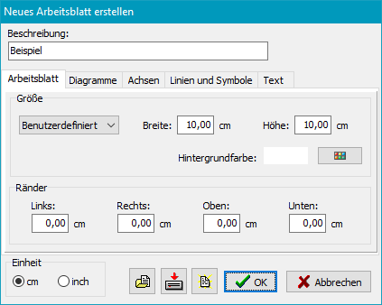
Nach einem Klick auf die Schaltfläche oder bei Auswahl von Arbeitsblatt ⇒ Neu ..
im Menü öffnet sich ein Dialog, in dem eine kurze Beschreibung, die Größe des Arbeitsblattes
und die Breite der Ränder (nur für direktes Drucken erforderlich), die
zu verwendenden Einheiten (cm oder Inch), sowie die Grundeinstellungen für die
noch anzulegenden Diagramme festgelegt werden. Die Vorgabewerte des Programms sind für ein Blatt
gedacht, das als Abbildung in einen Text eingefügt werden soll (10 x 10 cm2).
Der Benutzer kann diese Werte jederzeit im Menü über
Einstellungen ⇒ Arbeitsblatt seinen Wünschen anpassen.
Das Programm erstellt danach automatisch das erste Diagramm.
Die Größe wird an die des Arbeitsblattes angepasst.
Arbeitsblatt bearbeiten
Mit einem Klick auf die Schaltfläche oder bei Auswahl von Arbeitsblatt ⇒ Eigenschaften ..
im Menü öffnet sich ein Dialog, in dem alle oben beschriebenen Eigenschaften des
Arbeitsblatts (außer den Einheiten) jederzeit verändert werden können. Über die
Schaltflächen in der Mitte unten können die Vorgabewerte aus einer Datei
geladen, in einer Datei gespeichert oder auf die Standardvorgabewerte des
Programms zurückgesetzt werden. So kann man das Grunddesign an verschiedene
Projekte individuell anpassen.
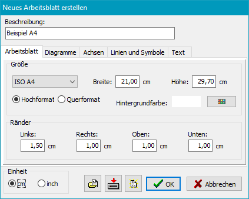
Arbeitsblatt laden
Mit einem Klick auf die Schaltfläche oder bei Auswahl von Arbeitsblatt ⇒ Laden ..
im Menü öffnet sich ein Dialogfenster, in dem ein als Datei gespeichertes Arbeitsblatt
(Dateityp: xrp) ausgewählt wird. Das Blatt wird geladen und angezeigt.
Alle zuletzt benutzten Arbeitsblätter werden vom Programm in einer Liste gespeichert,
aus der es zum schnellen Laden ausgewählt werden kann:
Klick auf den Pfeil in der Werkzeugleiste
oder über das
Menü ⇒ Arbeitsblatt ⇒ Zuletzt verwendet
Hinweis: Die Arbeitsblätter werden als Zip-Archive gespeichert. Sie
enthalten ein XML-Datei mit den Arbeitsblatt-Daten und die verwendeten Bilder (sofern
vorhanden) im BMP-Format.
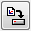
Arbeitsblatt speichern
Mit einem Klick Klick auf die Schaltfläche in der Werkzeugleiste
oder bei Auswahl von Arbeitsblatt ⇒ Speichern ..
wird das Arbeitsblatt mit allen Veränderungen ohne Nachfrage unter dem aktuellen
Dateinamen gespeichert.
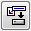
Arbeitsblatt unter neuem Namen speichern
Mit einem Klick Klick auf die Schaltfläche in der Werkzeugleiste
oder bei Auswahl von Arbeitsblatt ⇒ Speichern als .. im Menü
wird das Arbeitsblatt mit den aktuellen Veränderungen unter einem neuen Dateinamen
gespeichert.
Grafische Anzeige
Größe anpassen
Die Skalierung der grafischen Darstellung wird so eingestellt, dass das
Arbeitsblatt das Anzeigefenster voll ausfüllt.
Vergrößern
Die grafische Darstellung wird stufenweise um den Faktor 1,4 vergrößert. Der
angezeigte Ausschnitt kann durch Klick auf das Diagramm und verschieben bei
gedrückter linker Maustaste oder durch Bewegen der Schiebebalken am Rand
angepasst werden.
Verkleinern
Die grafische Darstellung wird stufenweise um den Faktor 1,4 verkleinert.
Anzeige aktualisieren
Durch Klick auf diese Schaltfläche wird die Grafik neu gezeichnet.
Drucken und Exportieren
Grafische Darstellung drucken
Mit einem Klick Klick auf die Schaltfläche in der Werkzeugleiste
oder über das Menü ⇒ Arbeitsblatt ⇒ Drucken ..
erfolgt die Auswahl eines Druckers und die anschließende Ausgabe der
grafischen Darstellung.
Speichern als Encapsulated-Postscript-Datei (EPS)
Die grafische Darstellung wird in das Postscript-Format konvertiert und
als Datei gespeichert. Diese Datei kann dann z.B. als Abbildung in LaTeX-Dokumente
eingefügt werden.
 Kopieren in die Windows-Zwischenablage
Kopieren in die Windows-Zwischenablage
Die grafische Darstellung wird in die Windows-Zwischenablage kopiert und kann
von dort in jede andere geeignete Anwendung (z.B. für die Textbearbeitung)
eingefügt werden.
Farbe übernehmen
Nach einem Klick Klick auf die Schaltfläche in der Werkzeugleiste wandelt sich
der Cursor in einen Farbaufnehmer, wenn man ihn über die grafische Darstellung
bewegt. Die Farbe unter dem Cursor wird im Status-Fenster am unteren Rand
als RGB-Wert angezeigt. Mit einem Maus-Klick wird sie als benutzerdefinierte Farbe
gespeichert und kann danach in den Dialogen für die Farbauswahl (z.B. für Linien
oder Hintergründe) ausgewählt werden.
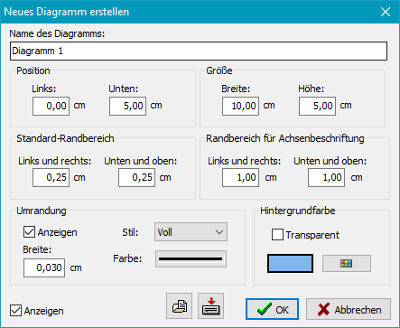
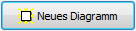
Neues Diagramm einfügen
Nach einem Klick auf die Schaltfläche oder bei Auswahl von Diagramm ⇒ Neu
im Menü wird der Dialog zur Bearbeitung der Einstellungen für das neue Diagramms geöffnet.
Die Größe wird immer automatisch so berechnet, dass das erste Diagramm das Arbeitsblatt voll ausfüllt.
Werden weitere Diagramme hinzugefügt, werden sie automatisch vertikal angeordnet
und in der Größe angepasst. Für die Koordinatenachsen wird dabei ein
einstellbarer Randbereich freigehalten. Natürlich können Ort und Größe der Diagramme
auch auf individuelle Werte eingestellt werden.
Optional kann eine Hintergrundfarbe gewählt, und eingestellt werden, ob das
Diagramm eine Umrandung erhalten soll.
Jedes Diagramm erhält vom Programm automatisch einen eindeutigen Namen, der
vom Benutzer beliebig geändert werden kann. Unter diesen Namen werden die Diagramme
zusammen mit der Anzahl der untergeordneten Objekte in der Diagrammliste angezeigt.
Ein grünes Häkchen bedeutet, dass das Diagramm in der grafischen Darstellung
angezeigt wird. Fehlt dieses Häkchen, bleibt das Diagramm unsichtbar. Die
Einstellung kann im jeweiligen Diagrammdialog vorgenommen werden. Wird
stattdessen ein rotes Kreuz angezeigt, wurde dieses Diagramm zum
Entfernen markiert.
Das Zeichnen der Diagramme in der grafischen Darstellung erfolgt in der Reihenfolge
der Liste. Weiter unten stehende Diagramme überdecken weiter oben stehende.
Zur Veränderung dieser Reihenfolge klickt man auf eine der Schaltflächen mit
den Pfeilen nach oben oder unten. Das ausgewählte Diagramm wird entsprechend
verschoben.
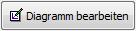
Diagramm bearbeiten
Mit einem Klick auf die Schaltfläche oder bei Auswahl von Diagramm ⇒ Bearbeiten
im Menü wird der Dialog für die Einstellungen des Diagramms geöffnet:
- Name: Name des Diagramms (automatisch oder benutzerdefiniert)
- Position: Hier wird die Position der linken unteren Ecke des
Diagramms (das ist gleichzeitig die Position des Nullpunkts der jeweils ersten
Koordinatenachsen) angegeben.
- Größe: Hier werden die Breite und Höhe des Diagramms angegeben
(das sind gleichzeitig die Längen der jeweiligen Achsen).
- Standard-Randbereich: Dies ist die Breite des Streifens, der auf den
Seiten des Diagramms freigehalten werden soll, auf denen sich keine Achsen
befinden (Vorgabe: 0,25 cm).
- Randbreite für Achsenbeschriftung: Dies ist die Breite des Streifens,
der auf den Seiten des Diagramms für eine Achse frei gehalten werden soll
(Vorgabe: 1 cm). Befinden sich auf einer Seite des Diagramms mehrere Achsen
wird dieser Bereich entsprechend vervielfacht.
- Umrandung: Normalerweise erfolgt die Umrandung mit den
Achsen. Alternativ kann auch eine in der Breite, im Stil
und der Farbe einstellbare Linie gezeichnet werden (siehe Abb. oben).
- Hintergrundfarbe: Ein Diagramm kann entweder einen transparenten
Hintergrund versehen oder mit einer auswählbaren Farbe hinterlegt werden.
Alle für ein Diagramm vorgenommenen Einstellungen, einschließlich der Einstellungen
für alle untergeordneten Objekte, können als Vorlage abgespeichert werden, um
sie für andere Diagramme wieder verwenden zu können:
Laden einer Diagramm-Vorlage
Speichern der aktuellen
Einstellungen als Diagramm-Vorlage
Diagramm entfernen
Nach einem Klick auf die Schaltfläche oder über bei Auswahl von Diagramm ⇒ Entfernen
im Menü wird das ausgewählte Diagramm zum Löschen markiert. In der Liste der Diagramme
wird dies durch ein kleines rotes Kreuz angezeigt. Diese Markierung kann rückgängig
gemacht werden, solange das Arbeitsblatt noch nicht gespeichert wurde.
Erst beim Abspeichern wird es endgültig gelöscht.
Diagramm duplizieren
Mit einem Klick auf die Schaltfläche wird ein Duplikat des ausgewählten Diagramms,
einschließlich aller seiner Objekte, angefertigt. Die Positionen und Größen
der anderen Diagramme wird automatisch angepasst.
Einem Diagramm können verschiedene Objekte hinzugefügt werden. Man klickt dazu
auf eine Schaltfläche der Auswahlpalette. Bei einigen Objekten kann über ein
Untermenü eine spezielle Auswahl getroffen werden. Alle Objekte erhalten vom
Programm automatisch einen eindeutigen Namen, der vom Benutzer beliebig
geändert werden kann. Unter diesen Namen werden die Objekte zusammen mit ihrer
Typbezeichnung in der Objektliste angezeigt. Ein grünes Häkchen bedeutet,
dass das Objekt in der grafischen Darstellung angezeigt wird. Fehlt dieses
Häkchen, bleibt das Objekt unsichtbar. Die Einstellung kann im jeweiligen
Objektdialog vorgenommen werden. Wird stattdessen ein rotes Kreuz angezeigt,
wurde dieses Objekt zum Entfernen markiert. Diese Markierung kann
rückgängig gemacht werden, solange das Arbeitsblatt noch nicht gespeichert
wurde.
Das Zeichnen der Objekte in der grafischen Darstellung erfolgt in der Reihenfolge
der Liste. Weiter unten stehende Objekte überdecken weiter oben stehende.
Zur Veränderung dieser Reihenfolge klickt man auf eine der Schaltflächen mit
den Pfeilen nach oben oder unten. Das ausgewählte Objekt wird entsprechend
verschoben.
Einige Dialoge bieten die Möglichkeit die vorgenommenen Einstellungen (z.B. bei
einer Achse) als Vorlage zu speichern. Aus dieser Vorlage können die
Einstellungen dann für andere Objekte wieder geladen werden:
Laden einer Vorlage
Speichern der aktuellen
Einstellungen als Vorlage
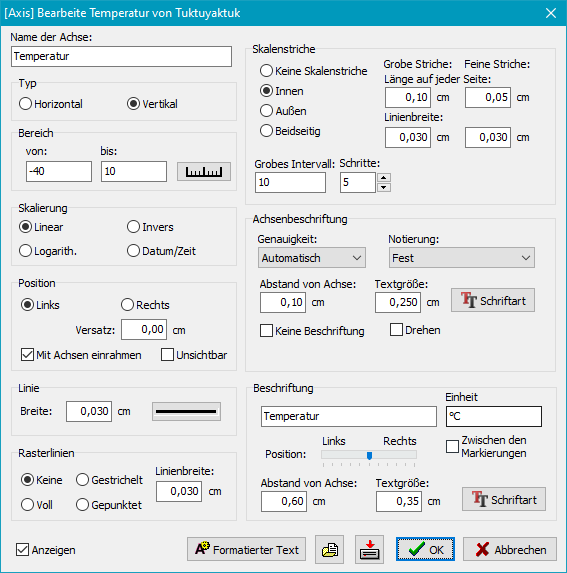
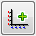
Koordinatenachse einfügen
Das Auswahlmenü bietet die Möglichkeiten eine X- oder Y-Achse zu erstellen oder
eine bereits vorhandene Achse zu duplizieren.
Im Dialogfenster (siehe Abb. rechts) werden die Eigenschaften der neuen
Achse angezeigt und können dort vom Benutzer angepasst werden:
- Name: Name der Achse (automatisch oder benutzerdefiniert)
- Typ: Achsentyp (Horizontal oder vertikal)
- Bereich: Bereich für die Achsenskalierung (Anfangs- und Endwert)
Ein Klick auf die Schaltfläche mit der Skala berechnet automatisch die
groben und feinen Unterteilungen.
- Skalierung: Die Skalierung kann linear, logarithmisch, invers oder
linear mit einer Unterteilung mit Datums- und Zeitwerten sein.
- Position: Die Achse wird relativ zum linken oder rechten Rand (bzw.
unteren oder oberen Rand) des Diagramms angegeben. Beim Erstellen einer neuen
Achse wird diese Position, abhängig davon wie viele weitere Achsen das Diagramm
enthält, automatisch berechnet.
Optional kann eine Spiegelbild der Achse auf der jeweils anderen Seite des
Diagramms angezeigt oder die Achse ausgeblendet werden.
- Linie: Hier wird die Linienstärke und die Farbe eingestellt.
- Rasterlinien: Bei den groben Skalenmarkierung kann eine Linie
über das ganze Diagramms angezeigt werden. Die Breite und der
Stil sind einstellbar.
- Skalenstriche: Die Breite und Länge der groben und feinen
Skalenstriche ist getrennt einstellbar. Außerdem kann angegeben werden,
ob die Striche nur auf der Innen- oder Außenseite der Achse oder auf beiden
Seiten gezeichnet werden sollen.
Die Intervallunterteilung kann automatisch berechnet (siehe oben unter
Bereich) oder von Hand vorgenommen werden:
- Grobes Intervall: Angabe in den Bereichseinheiten
- Schritte: Anzahl der Unterteilungen des groben Intervalls
- 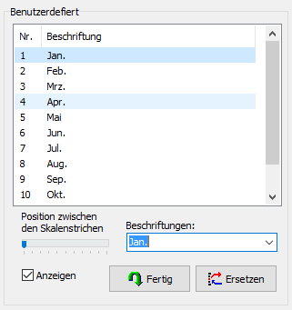
Achsenbeschriftung mit Zahlen:
- Genauigkeit: Damit ist die Anzahl von anzuzeigenden relevanten
Stellen (1 .. 8, automatisch oder ganzzahlig) gemeint. Das Programm rundet
die Werte entsprechend. Bei der Auswahl von ganzzahligen Werten können
diese durch individuelle Texte ersetzt werden (siehe unten).
- Notierung: Es kann ausgewählt werden, wie die Zahlen angezeigt
werden sollen: Fest (12345,6), wissenschaftlich (1,23456⋅104),
technisch (12,3456⋅103) oder mit Vorsätzen (12,3456k)
- Abstand von der Achse: Abstand der den Achsen zugewandten Seite des
Textes zur Achse
- Textgröße und -schrift: Die Größe und die Schriftart können
individuell gewählt werden.
- Weitere Optionen: Optional kann die Beschriftung unterdrückt
werden und bei vertikalen Achsen um 90° gedreht werden.
- Achsenbeschriftung mit benutzerdefinierten Texten: Wurde als
Genauigkeit ganzzahlig ausgewählt, können über die Schaltfläche
Benutzerdefiniert individuelle Texte für die Beschriftung an den
groben Skalenstrichen (in der Abb. die Monatsnamen) eingegeben werden.
Mit dem Schieberegler kann die Position innerhalb des Intervalls verschoben
werden: Von zentriert am zugeordneten Skalenstrich bis zentriert am nachfolgenden
Skalenstrich. Bei Mittelstellung wird der Text in der Mitte des Intervalls
angezeigt. Damit der Alternativtext angezeigt wird (und nicht die zugeordneten
Zahlen) muss das Häkchen bei Anzeigen gesetzt sein. Mit einem Klick
auf die Schaltfläche Fertig schließt man die Eingabe ab.
- Beschriftung:
- Text und Einheit: Hier wird der Beschreibungstext für die Achse
eingegeben. Die optional angegebene Einheit wird entweder dem Text mit
einem Schrägstrich nachgestellt oder, wenn das Häkchen bei In der
Skala anzeigen gesetzt ist, zwischen den beiden letzten groben
Skalenstrichen (DIN 461) angezeigt.
- Position: Mit dem Schieberegler wird die Position der
Beschriftung entlang der Achse eingestellt. Außerdem kann der Abstand
zur Achse angepasst werden
- Textgröße und -schrift: Die Größe und die Schriftart können
individuell gewählt werden.
- Individuelle Schriftgestaltung: Einzelne Textteile können auf
Wunsch fett oder kursiv, hoch- oder tiefgestellt
dargestellt werden und es können Sonderzeichen (wie z.B. griechische Buchstaben)
eingefügt werden (Einzelheiten dazu).
Datenkurve einfügen
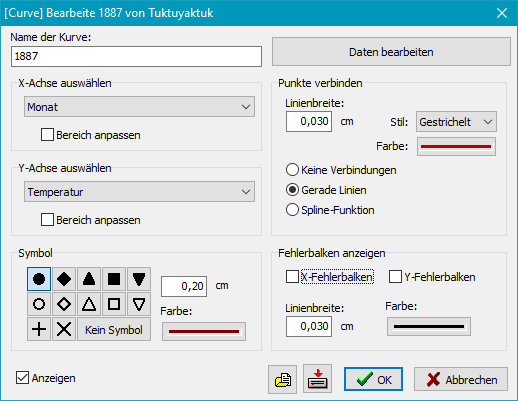
Wenn bei einem neuen Arbeitsblatt diese Schaltfläche angeklickt wird, wird
automatisch ein Format füllendes Diagramm mit jeweils einer X- und einer Y-Achse
angelegt. Die Bereiche werden nach der Eingabe der Datenpunkte automatisch angepasst.
Im Dialogfenster (siehe Abb. rechts) werden die Eigenschaften der anzuzeigenden
Kurve angezeigt und können dort vom Benutzer bearbeitet werden:
- Name: Name der Kurve (automatisch oder benutzerdefiniert)
- X-Achse auswählen: Wenn mehrere X-Achsen existieren, muss die
zu den Daten zugehörige aus der Liste ausgewählt werden, um eine richtige
Skalierung zu bewirken.
Auf Wunsch kann eine automatische Anpassung des Achsenbereichs entsprechend
den Daten vorgenommen werden.
- Y-Achse auswählen: Wenn mehrere Y-Achsen existieren, muss die
zu den Daten zugehörige aus der Liste ausgewählt werden, um eine richtige
Skalierung zu bewirken.
Auf Wunsch kann eine automatische Anpassung des Achsenbereichs entsprechend
den Daten vorgenommen werden.
- Daten bearbeiten: Ein Klick auf diese Schaltfläche öffnet einen
Dialog für die Eingabe der Datenpunkte.
- Symbol: Die Datenpunkte werden durch ein auswählbares Symbol markiert.
Die Form, Größe und Farbe sind einstellbar.
- Punkte verbinden: Auf Wunsch können die Datenpunkte durch gerade
Linien verbunden oder eine Spline-Funktion als glatte Kurve
darüber gelegt werden. Die Stärke der Glättung ist einstellbar (0 = keine
Glättung, 100 = sehr starke Glättung)). Linienbreite, Stil (nur bei Linien)
und Farbe sind einstellbar.
- Fehlerbalken anzeigen: Wenn im Datensatz zu den Datenpunkte
Fehlerabweichungen angegeben werden, können diese als Fehlerbalken (für
X und Y getrennt) angezeigt werden. Linienbreite und Farbe sind einstellbar.
Dateneingabe
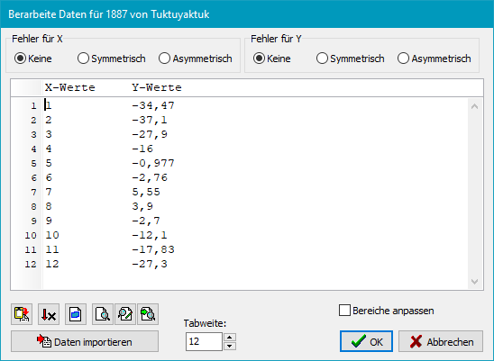
Die Dateneingabe erfolgt mit einem Texteditor zeilenweise (siehe Abb. rechts).
Zur Spaltentrennung kann bei der Eingabe die Leer- oder die Tab-Taste verwendet
werden. Oben wird ausgewählt, ob in dem Datensatz Fehlerangaben enthalten sind.
Entsprechend werden weitere Spalten angelegt (siehe Abb. rechts unten).
Die Fehlerangaben werden immer als Differenz zum Nennwert angegeben und können
auch asymmetrisch sein (Werte immer positiv).
Unten links befindet sich eine Werkzeugleiste mit Schaltflächen für folgende
Funktionen:
Text aus der
Zwischenablage einfügen
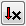 Tabelle nach
aufsteigenden X-Werten sortieren
Umschalten
vom Block- in den Spaltenmodus beim Markieren von Texten
Nach Text
suchen
Textstelle
ersetzen
Nächste
Textstelle suchen oder ersetzten
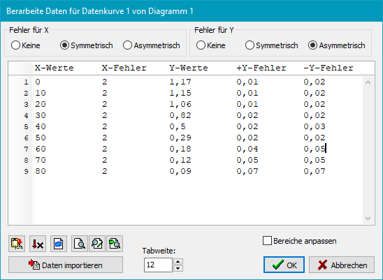
- Daten importieren: Zum Importieren von Daten im CSV-Format
siehe weiter unten
- Bereiche anpassen: Ist diese Feld markiert, werden nach dem Schließen
der Dateneingabe im Kurvendialogs (siehe oben) die
Markierungen für die automatische Skalierung gesetzt.
Eingabe von Datum und Zeit
Sowohl bei der Handeingabe als auch beim Import können folgende Formate
verwendet werden:
- yyyy-mm-dd nur Datum, z.B. 2020-07-21
- [d]d.[m]m.yyyy nur Datum, z.B. 21.7.2020
- hh:mm[:ss] nur Zeit. z.B. 12:30:15 oder 12:30
- sss[,z] Zeit in Sekunden, z.B. 125,5
- yyyy-mm-dd hh:mm:ss Datum und Zeit, z.B. 2020-07-21 12:30:15
- [d]d.[m]m.yyyy hh:mm[:ss] Datum und Zeit, z.B. 21.7.2020 12:30:15
Daten importieren
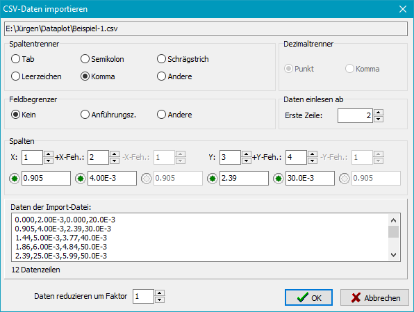
Es können alle im CSV-Format (comma separated values)
abgespeicherten Daten importiert werden. Da dieses Format von sehr vielen Anwendungen
unterstützt wird, hat man eine universelle Datenschnittstelle. Die genauen
Formateinstellungen können, ebenso wie die Spaltenzuordnung angepasst werden
(siehe Abb. rechts). Kommentarzeilen am Anfang können übersprungen werden.
Je nach zu importierender CSV-Datei müssen Spaltentrenner (z.B. Komma oder Semikolon),
Dezimaltrenner (Komma oder Punkt) ubd Feldbegrenzer (z.B. doppelte
Anführungszeichen) geeignet ausgewählt werden. Im unteren Fenster wird ein Ausschnitt
aus der zu importierende CSV-Datei zur Kontrolle angezeigt. Die Spalten werden
durch Klick auf die kleinen Pfeile neben den einzelnen Spaltenzählern ausgewählt.
Ein grünes Signal zeigt an, dass
der jeweilige Wert fehlerfrei gelesen werden konnte. Ist das Signal rot,
ist entweder die Auswahl eines Trenners oder einer Spalte falsch.
Daten reduzieren um Faktor ..: Enthält die importierte Datentabelle
sehr viele Datensätze, kann diese Anzahl durch Angabe eines Faktors reduziert werden
(z.B. 5 = Es wird jeweils über 5 Datensätze gemittelt).
Ausgleichskurve einfügen
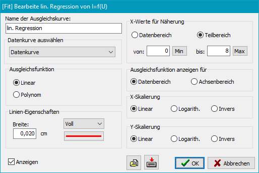
Die Berechnung der Ausgleichskurve (lineare Funktion oder Polynom bis max. 10 Grades)
erfolgt nach dem Prinzip der kleinsten Fehlerquadrate. In X- und Y-Richtung kann
unabhängig voneinander eine lineare, logarithmische oder inverse Skalierung
dabei berücksichtigt werden.
- Name: Name der Ausgleichskurve (automatisch oder benutzerdefiniert)
- Datenkurve auswählen: Auswahl der Daten, für die eine Ausgleichskurve
angezeigt werden soll.
- Ausgleichsfunktion: Es kann zwischen einer Geraden und einem Polynom
bis max. 10 Grades gewählt werden.
- Linien-Eigenschaften: Breite, Stil und Farbe sind einstellbar.
- X-Werte für Näherung: Für die Berechnung können entweder alle Werte
oder nur ein einstellbarer X-Bereich verwendet werden (z.B. wenn eine Datenkurve
nur in einem Teilbereich durch eine Gerade approximiert werden kann).
- Ausgleichsfunktion anzeigen für ..: Es kann ausgewählt werden, ob die
Ausgleichskurve nur für den Bereich angezeigt werden soll, für den sie berechnet
wurde, oder ob sie bis zu den Bereichsgrenzen der Achse extrapoliert werden soll.
- X- und Y-Skalierung: Vor der Berechnung werden X- oder Y-Werte entsprechend der
Auswahl skaliert (z.B. zur Berechnung von Asymptoten in einer doppelt
logarithmischen Darstellung).
Funktionskurve einfügen
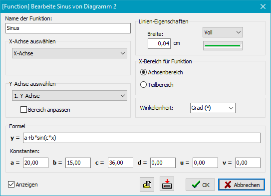
Es wird eine durch einen mathematischen Ausdruck beschriebene Funktion in das
Diagramm eingefügt. Wenn bei einem neuen Arbeitsblatt diese Schaltfläche angeklickt
wird, wird automatisch ein Format füllendes Diagramm mit jeweils einer X- und
einer Y-Achse angelegt. Für die X-Achse muss außerdem ein Bereich festgelegt werden:
- Name: Name der Funktion (automatisch oder benutzerdefiniert)
- X-Achse auswählen: Wenn mehrere X-Achsen existieren, muss die
der Funktion zuzuordnende aus der Liste ausgewählt werden, um einen
Bereich für die Berechnung vorzugeben.
- Y-Achse auswählen: Wenn mehrere Y-Achsen existieren, muss die
der Funktion zuzuordnende zugehörige aus der Liste ausgewählt werden, um eine richtige
Skalierung zu bewirken.
Auf Wunsch kann eine automatische Anpassung des Achsenbereichs entsprechend
den Daten vorgenommen werden.
- Linien-Eigenschaften: Breite, Stil und Farbe sind einstellbar.
- X-Bereich für die Funktion: Es kann entweder der gesamte Bereich der
X-Achse oder auch nur ein Teilbereich (von .. bis) ausgewählt werden.
- Winkeleinheiten: Bei der Berechnung der Funktion können folgende
Winkeleinheiten verwendet werden: Bogenmaß (rad), Grad (°) oder
Neugrad (gon).
- Formel: Es muss der funktionale Zusammenhang y = f(x)
als Formel angegeben werden. Die Syntax ist ähnlich, wie sie bei den meisten
Programmiersprachen verwendet wird. Zwischen Groß- und Kleinschreibung wird nicht
unterschieden. Die Argumente bei den trigonometrischen Funktionen werden
in der ausgewählten Winkeleinheit ausgewertet. Entsprechendes gilt für die
Resultate bei den Arcus-Funktionen. In der Formel können außerdem bis zu
6 frei definierbare Konstanten verwendet werden. Dadurch wird es sehr einfach,
komplizierte Formeln durch Kopieren mehrfach in einem Diagramm zu verwenden.
Es müssen dann jeweils nur die Werte der Konstanten entsprechend angepasst werden.
- Zahlen:
- Zahlen dürfen ein führendes Vorzeichen, einen Dezimaltrenner (wie systemseitig
eingestellt, bei deutschen Windows-Installationen also das Komma) und einen
Exponenten enthalten.
Beispiele: 3 ; 4,7 ; -0,03 ; 1,2E-2
- Variable:
- Wert der ausgewählten X-Achse: x
- Konstanten:
- Vordefinierte Konstanten: Pi und e
- Benutzerdefinierte Konstanten: a, b, c, d, u und v
- Operatoren:
- Als Operatoren können die vier Grundrechenarten +, -,
* und / verwendet werden. Potenzen werden mit ^
gekennzeichnet. Klammern, auch verschachtelt, sind erlaubt. Es gelten immer die in
der Mathematik üblichen Vorrangregeln.
Beispiel: 2,1 * x^2 + 3,5*(x-0,5) + e^x
- Funktionen:
-
- Trigonometrische Funktionen: sin, cos, tan und cot
- Arcus-Funktionen: asin, acos, atan und acot
- Hyperbelfunktionen: sinh, cosh, tanh, und coth
- Area-Funktionen: asinh, acosh, atanh und acoth
- Logarithmen: ln (natürlich) und lg (dekadisch)
- e-Funktion: exp und Quadratwurzel: sqrt
- sonstige: abs (Absolutwert), sign (Signum) und fak (Fakultät)
Besondere Diagrammformen
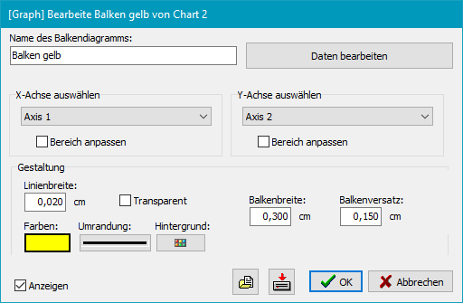
Balkendiagramm einfügen
Wenn bei einem neuen Arbeitsblatt diese Schaltfläche angeklickt wird, wird
automatisch ein Format füllendes Diagramm mit jeweils einer X- und einer Y-Achse
angelegt. Die Bereiche werden nach der Eingabe der Datenpunkte automatisch angepasst.
Im Dialogfenster (siehe Abb. rechts) werden die Eigenschaften des anzuzeigenden
Balkendiagramms angezeigt und können dort vom Benutzer bearbeitet werden:
- Name: Name des Balkendiagramms (automatisch oder benutzerdefiniert)
- X-Achse auswählen: Wenn mehrere X-Achsen existieren, muss die
zu den Daten zugehörige aus der Liste ausgewählt werden, um eine richtige
Skalierung zu bewirken.
Auf Wunsch kann eine automatische Anpassung des Achsenbereichs entsprechend
den Daten vorgenommen werden.
- Y-Achse auswählen: Wenn mehrere Y-Achsen existieren, muss die
zu den Daten zugehörige aus der Liste ausgewählt werden, um eine richtige
Skalierung zu bewirken.
Auf Wunsch kann eine automatische Anpassung des Achsenbereichs entsprechend
den Daten vorgenommen werden.
- Daten bearbeiten: Ein Klick auf diese Schaltfläche öffnet einen
Dialog für die Eingabe der Datenwerte.
- Gestaltung: Breite und Farbe der Umrandung, sowie die Farbe des
Hintergrunds der Balken sind einstellbar.
- Balkenbreite: Die Balken werden symmetrisch zum X-Wert in der
angegebenen Breite angezeigt.
- Balkenversatz: Wenn mehrere Datenreihen dargestellt werden sollen,
können die weiter hinter liegenden gegenüber dem X-Wert seitlich versetzt
werden.
Histogramm einfügen
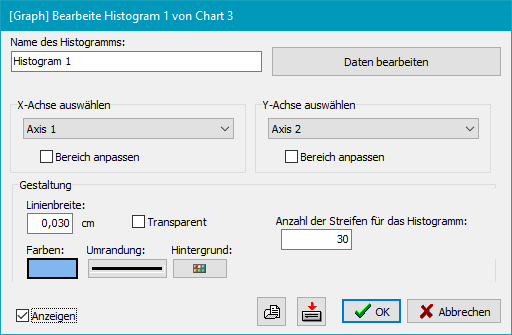
Wenn bei einem neuen Arbeitsblatt diese Schaltfläche angeklickt wird, wird
automatisch ein Format füllendes Diagramm mit jeweils einer X- und einer Y-Achse
angelegt. Die Bereiche werden nach der Eingabe der Datenpunkte automatisch angepasst.
Bei der Eingabe der Daten ist nur eine Wertereihe (X-Werte) erforderlich. Vor der Anzeige
wird automatisch ermittelt, wie viele Werte in den durch einen Streifen festgelegten
Wertebereich fallen.
Im Dialogfenster (siehe Abb. rechts) werden die Eigenschaften der anzuzeigenden
Histogramms angezeigt und können dort vom Benutzer bearbeitet werden:
- Name: Name des Histogramms (automatisch oder benutzerdefiniert)
- X-Achse auswählen: Wenn mehrere X-Achsen existieren, muss die
zu den Daten zugehörige aus der Liste ausgewählt werden, um eine richtige
Skalierung zu bewirken.
Auf Wunsch kann eine automatische Anpassung des Achsenbereichs entsprechend
den Daten vorgenommen werden.
- Y-Achse auswählen: Wenn mehrere Y-Achsen existieren, muss die
zu den Daten zugehörige aus der Liste ausgewählt werden, um eine richtige
Skalierung zu bewirken.
Auf Wunsch kann eine automatische Anpassung des Achsenbereichs entsprechend
den Daten vorgenommen werden.
- Daten bearbeiten: Ein Klick auf diese Schaltfläche öffnet einen
Dialog für die Eingabe der Datenwerte.
- Gestaltung: Breite und Farbe der Umrandung, sowie die Farbe des
Hintergrunds der Balken sind einstellbar.
- Anzahl der Streifen: Die X-Achse wird linear in die angegebene
Anzahl von Streifen aufgeteilt. Zu jedem Streifen gehört entsprechend der
Skalierung der X-Achse ein Wertebereich. Die in diesen Bereich fallenden
Werte werden ausgezählt und durch eine entsprechende Balkenhöhe angezeigt.
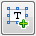
Textobjekte einfügen
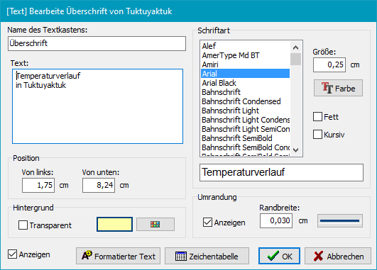
Mit dieser Funktion können dem Diagramm frei platzierbare Texte hinzugefügt
werden. Es gibt dabei vier verschiedene, nachfolgend beschriebene Varianten
(Textkasten, Kommentar, Legende und
Ergebnis einer Ausgleichskurve). Allen gemeinsam sind folgende Einstellungen:
- Name: Name des Textobjektes (automatisch oder benutzerdefiniert)
- Position: Es wird die Position der linken unteren Ecke des
Textobjektes relativ zur linken unteren Ecke des Arbeitsblatts eingegeben.
Das Textobjekt ist auf dem Diagramm mit der Maus frei verschiebbar.
- Schriftart: Die Schriftart kann aus den verfügbaren TrueType-Schriften
ausgewählt werden. Standard ist Arial. Größe und Farbe sind
einstellbar. Außerdem kann der Stil (fett und/oder kursiv) gewählt werden.
Wenn ein EPS-Export verwendet werden soll, wird empfohlen eine der dem
Postscript-Standard (Times, Helvetica und Courier) ähnliche Schrift
(Times New Roman, Arial und Courier New) zu verwenden.
- Hintergrund: Das Textobjekt (außer bei Kommentaren) kann entweder
einen transparenten Hintergrund haben oder mit einer auswählbaren Farbe
hinterlegt werden.
- Umrandung: Optional kann (außer bei Kommentaren) eine Umrandung
mit einstellbarer Linienbreite und -farbe angezeigt werden.
- Formatierter Text: Markiert den ausgewählten Text für eine spezielle
Formatierung (z.B. fett) (weitere Einzelheiten).
- Zeichentabelle: Öffnete einen Dialog, um Zeichen einzugeben,
die auf der Tastatur nicht verfügbar sind (weitere Einzelheiten).
Textkasten
Der Text kann mehrere Zeilen haben. Die Größe von Umrahmung und
Hintergrund werden automatisch angepasst.
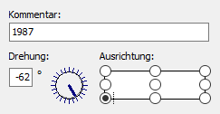
- Individuelle Schriftgestaltung: Einzelne Textteile können auf
Wunsch fett oder kursiv, hoch- oder tiefgestellt
dargestellt werden und es können Sonderzeichen (wie z.B. griechische Buchstaben)
eingefügt werden (Einzelheiten dazu).
Kommentare
Der Text muss einzeilig sein, kann aber gedreht dargestellt werden. Der
Bezugspunkt für die Drehung ist auswählbar.
- Individuelle Schriftgestaltung: Einzelne Textteile können auf
Wunsch fett oder kursiv, hoch- oder tiefgestellt
dargestellt werden und es können Sonderzeichen (wie z.B. griechische Buchstaben)
eingefügt werden (Einzelheiten dazu).
- Drehung: Drehwinkel in ° gegen den Uhrzeigersinn
- Ausrichtung: Relativer Bezugspunkt für die angegebene Position
Legenden
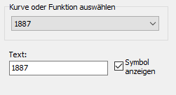
Eine Legende besteht aus einem kurzen Ausschnitt (Symbol + Linie) einer Kurve
oder einer Funktion und einer kurzen Beschreibung des Benutzers.
- Kurve oder Funktion auswählen: Auswahl der Kurve
oder Funktion, auf die sich die
Legende bezieht.
- Individuelle Schriftgestaltung: Einzelne Textteile können auf
Wunsch fett oder kursiv, hoch- oder tiefgestellt
dargestellt werden und es können Sonderzeichen (wie z.B. griechische Buchstaben)
eingefügt werden (Einzelheiten dazu).
- Symbol anzeigen: Anzeige des für die Datenpunkte der Kurve
verwendeten Symbols.
Ergebnis einer Ausgleichskurve
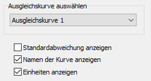
In einem Textkasten werden die Ergebnisse der Berechnung der Ausgleichskurve
(Polynomkoeffizienten) angezeigt.
- Ausgleichskurve auswählen: Auswahl der Ausgleichskurve,
deren Ergebnis angezeigt werden soll
- Standardabweichung anzeigen: Optionale Anzeige der Standardabweichung
- Namen der Kurve anzeigen: Optionale Anzeige des Namens der Ausgleichskurve
als Überschrift
- Einheiten anzeigen:Wenn bei den Achsen Einheiten
angegeben wurden, werden die Koeffizienten entsprechend beschriftet.
Grafikelemente einfügen
Mit dieser Funktion können Linien (opt. mit Pfeilspitzen) und Rechtecke
(opt. mit Füllung) im Diagramm platziert werden.
Alle Grafikobjekte können auf dem Diagramm mit der Maus frei verschoben und
skaliert werden.
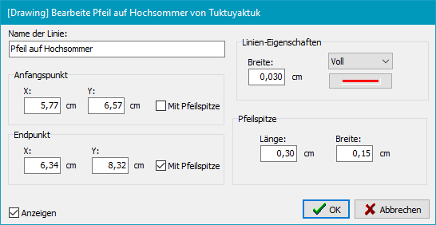
Linie
- Name: Name des Grafikobjektes (automatisch oder benutzerdefiniert)
- Anfangspunkt:
- X und Y: Koordinaten des Anfangspunkts der Linie relativ zur
linken unteren Ecke des Arbeitsblatts.
- Mit Pfeilspitze: Versieht den Anfangspunkt mit einer Pfeilspitze.
- Endpunkt:
- X und Y: Koordinaten des Endpunkts der Linie relativ zur
linken unteren Ecke des Arbeitsblatts.
- Mit Pfeilspitze: Versieht den Endpunkt mit einer Pfeilspitze.
- Linien-Eigenschaften: Breite, Stil und Farbe sind einstellbar.
- Pfeilspitze: Einstellungen für Breite und Länge der Pfeilspitze
Rechteck
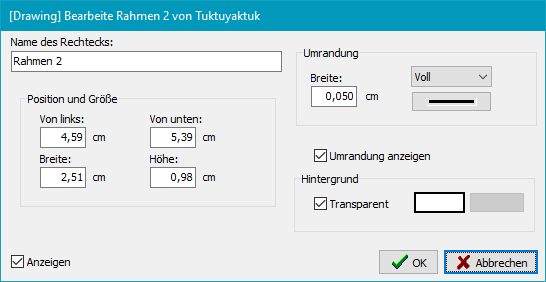
- Name: Name des Grafikobjektes (automatisch oder benutzerdefiniert)
- Position und Größe: Koordinaten der linken unteren Ecke relativ zur
linken unteren Ecke des Arbeitsblatts und Breite und Höhe des Rechtecks.
- Umrandung: Breite, Stil und Farbe der Umrandung sind einstellbar.
Optional kann die Umrandung ausgeblendet werden.
- Füllung: Die Füllung kann entweder transparent sein oder
in einer auswählbaren Farbe dargestellt werden.
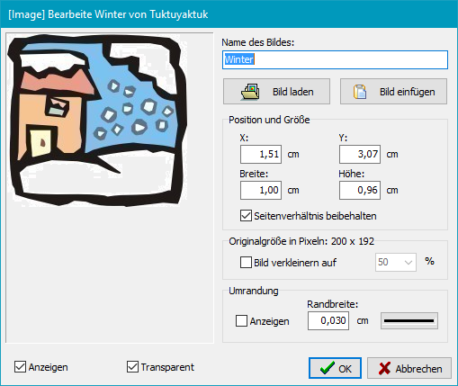
Bild einfügen
Mit dieser Funktion kann ein beliebiges Bild (jpg, bmp, gif, png, tif oder emf)
in das Diagramm eingefügt werden. Die Position in dem Diagramm wird durch Verschieben
mit der Maus festgelegt.
- Name: Name des Bildes (automatisch oder benutzerdefiniert)
- Bild laden: Es öffnet sich ein Dateidialog zum Auswählen des Bildes.
- Bild einfügen: Es wird ein Bild aus der Zwischenablage eingefügt.
- Position und Größe:
- X und Y: Koordinaten des Anfangspunkts der linken unteren Ecke des
Bildes relativ zur linken unteren Ecke des Arbeitsblatts.
- Breite und Höhe: Größe des Bildes auf dem Diagramm
- Seitenverhältnis beibehalten: Beim Ändern der Breite wird die
Höhe automatisch so angepasst, dass das Seitenverhältnis des Ursprungsbildes
erhalten bleibt. Das gleiche für eine Änderung der Höhe.
- Originalgröße: Die Originalgröße des Bildes wird in Pixeln angezeigt.
Auf Wunsch kann es verkleinert werden, um den benötigten Speicherplatz zu reduzieren.
- Umrandung: Breite, Stil und Farbe der Umrandung sind einstellbar.
Optional kann die Umrandung ausgeblendet werden.
- Transparent: Als transparente Farbe wird immer die Farbe der linken unteren
Ecke des Bildes verwendet.
Die Voreinstellungen legen fest, mit welchen Eigenschaften neue Arbeitsblätter,
Diagramme und Objekte erstellt werden.
Voreinstellungen lassen sich in einer Datei speichern und wieder laden, so dass
man individuelle Vorgaben für verschiedene Projekte erstellen kann. Alle angezeigten
Zahlenwerte beziehen sich immer auf die jeweils ausgewählte Einheit (cm oder Inch).
Arbeitsblatt
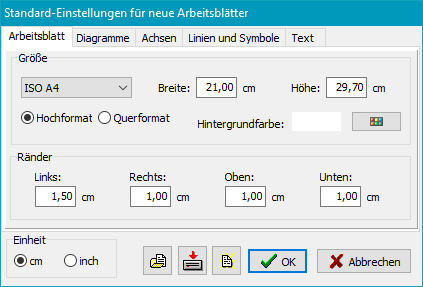
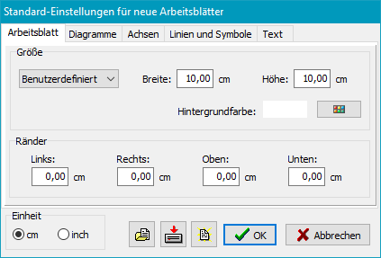
Die Vorgabewerte für die Größe des Arbeitsblattes sind für ein Blatt
gedacht, das als Abbildung in einen Text eingefügt werden soll (Vorgabe: 10 x 10 cm2,
kein Rand). Die Größe kann individuell angepasst werden. Außerdem ist es möglich, für die
Größe eines der gängigen Papierformate (z.B. ISO A4) auszuwählen.
Die Randeinstellungen sind für das Ausdrucken einen Blattes vorgesehen.
Außerdem können die Hintergrundfarbe und die zu verwendende Längeneinheit (cm
oder inch) ausgewählt werden.
Diagramme
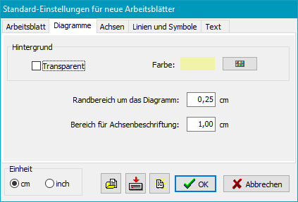
Die Hintergrundfarbe für Diagramme kann auf transparent (Farbe des
Arbeitsblattes, s.o.) oder
eine beliebige auswählbare Farbe eingestellt werden. Außerdem können die
Breiten des Randes und der Bereiche für die Achsenbeschriftung eingestellt
werden.
Achsen
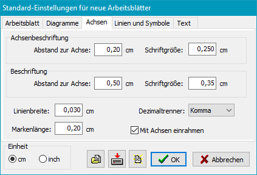
Sowohl für die Achsenbeschriftung (Zahlenwerte an den Markierungen) als auch
für die allgemeine Beschriftung (z.B. die dargestellte Messgröße) können
der Abstand zur Achse und die Schriftgröße vorgewählt werden. Außerdem kann die
Linienbreite und die Länge der Markierungen, eingestellt werden, sowie, ob die
Achsen an beiden Seiten des Diagramms (links und recht oder unten
und oben) angezeigt werden sollen.
Linien und Symbole
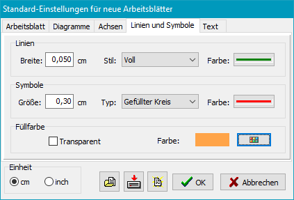
Es wird die Voreinstellung für die Linienbreite, den Linienstil (z.B. durchgezogen
oder gestrichelt), die Linienfarbe, sowie die Größe der Markierungen der Messpunkte,
ihre Form (z.B. Kreis oder Quadrat) und Farbe vorgenommen. Die Füllfarbe bezieht
sich auf das Grafikelement Rechteck.
Text
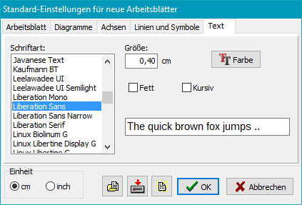
Hier wird die Vorauswahl von Schriftart, Stil, Größe und Farbe für die Achsenbeschriftungen
und sonstigen Texte eingestellt.
Individuelle Textformatierung:
Um Textteile in einem bestimmten Stil (z.B. fett oder kursiv), als hoch- oder
tiefgestellt oder als Sonderzeichen (z.B. griechische Buchstaben) darzustellen
werden die folgenden Formatierungszeichen eingefügt:
- *<Text>*: Der in Sternchen eingeschlossene Text wird fett
dargestellt.
- \<Text>\: Der in rückwärtige Schrägstriche eingeschlossene Text
wird kursiv dargestellt.
- ^<Text>^: Der in Hochpfeile eingeschlossene Text wird
verkleinert und hochgestellt dargestellt.
- _<Text>_: Der in Unterstriche eingeschlossene Text wird
verkleinert und tiefgestellt dargestellt.
- !<Text>!: Der in Ausrufezeichen eingeschlossene Text wird
mit Sonderzeichen aus dem Symbol-Zeichensatz dargestellt
(siehe die nachfolgende Tabellen für das jeweilige Ersatzzeichen).
Sonderzeichen
Griechische Buchstaben
| Griechisch | Zeichen |
| Α | A |
| Β | B |
| Χ | C |
| Δ | D |
| Ε | E |
| Φ | F |
| Γ | G |
| Η | H |
| Ι | I |
| ϑ | J |
| Κ | K |
| Λ | L |
| Μ | M |
|
|
| Griechisch | Zeichen |
| Ν | M |
| Ο | O |
| Π | P |
| Θ | Q |
| Ρ | R |
| Σ | S |
| Τ | T |
| Υ | U |
| ς | V |
| Ω | W |
| Ξ | X |
| Ψ | Y |
| Ζ | Z |
|
|
| Griechisch | Zeichen |
| α | a |
| β | b |
| χ | c |
| δ | d |
| ε | e |
| φ | f |
| γ | g |
| η | h |
| ι | i |
| φ | j |
| κ | k |
| λ | l |
| μ | m |
|
|
| Griechisch | Zeichen |
| ν | m |
| ο | o |
| π | p |
| θ | q |
| ρ | r |
| σ | s |
| τ | t |
| υ | u |
| ϖ | v |
| ω | w |
| ξ | x |
| ψ | y |
| ζ | z |
|
Mathematische Zeichen
| Symbol | Zeichen |
| ≅ | @ | (0040) |
| ≡ | ° | (00B0) |
| ≈ | » | (00BB) |
| ≤ | £ | (00A3) |
| ≥ | ³ | (00B3) |
| ∞ | ¥ | (00A5) |
| × | ´ | (00B4) |
| ⊗ | Ä | (00C4) |
| ⊕ | Å | (00C5) |
| ∏ | Õ | (00D5) |
| ∑ | å | (00E5) |
| √ | Ö | (00D6) |
| ∫ | ò | (00F2) |
| ⟨ | á | (00E1) |
| ⟩ | ñ | (00F1) |
|
|
| Symbol | Zeichen |
| ⊥ | ^ | (005E) |
| ↔ | « | (00AB) |
| → | ® | (00AE) |
| ↓ | ¯ | (00AF) |
| ↵ | ¿ | (00BF) |
| ⇔ | Û | (00DB) |
| ⇐ | Ü | (00DC) |
| ⇑ | Ý | (00DD) |
| ⇒ | Þ | (00DE) |
| ⇓ | ß | (00DF) |
| ◊ | à | (00E0) |
| ♣ | § | (00A7) |
| ♠ | ª | (00AA) |
| ♥ | © | (00A9) |
| ♦ | ¨ | (00A8) |
|
|
| Symbol | Zeichen |
| ℵ | À | (00C0) |
| ℑ | Á | (00C1) |
| ℜ | Â | (00C2) |
| ℘ | Ã | (00C3) |
| ∂ | ¶ | (00B6) |
| ∇ | Ñ | (00D1) |
| ∅ | Æ | (00C6) |
| ∩ | Ç | (00C7) |
| ∪ | È | (00C8() |
| ⊃ | É | (00C9)) |
| ⊇ | Ê | (00CA) |
| ⊄ | Ë | (00CB) |
| ⊂ | Ì | (00CC) |
| ⊆ | Í | (00CD) |
| ∴ | \ | (005C) |
|
Beispiele:
| y^2^ ⇒ y2 |
x_1_^2^ ⇒ x12 |
x_1_^2^ = y_4_^(a+b)^a^2^ ⇒ x12 = y4(a+b) a2 |
| *fetter* Text ⇒ fetter Text |
\Kursiver\ Text ⇒ kursiver Text |
!abcd! ⇒ αβχδ |
!å@³! ⇒ ∑≅ℜ≥ |
Eingabe von Sonderzeichen
Um Zeichen einzugeben, die auf der Tastatur nicht verfügbar sind, öffnet man
einen Dialog (siehe Abb. rechts), in dem man das gewünschte Zeichen mit der
Maus aus der Tabelle auswählen oder direkt als Hex-Wert in das Feld unten links
eingeben kann.
Beim Starten des Programms z.B. über einen Link auf dem Windows-Desktop oder durch
ein anderes Programm kann sein Verhalten durch die nachfolgend beschriebenen Optionen
gesteuert werden:
- ohne
- Das Programm startet mit dem zuletzt geöffneten Arbeitsblatt.
-
- [Sheet]
- Das Arbeitsblatt Sheet wird geladen und angezeigt.
-
- /ini:[IniFile]
- Das Programm speichert alle Benutzereinstellungen (z.B. auch die Voreinstellungen
für neue Arbeitsblätter) in einer Datei RPlot.ini ab, die sich
standardmäßig im Verzeichnis der Anwendungsdaten des Benutzers befindet:
- Vista, Windows 7,8 und 10: C:\Benutzer\<Benutzername>\AppData\Roaming
oder C:\Users\<Benutzername>\AppData\Roaming
- Windows 2000 und XP: C:\Dokumente und Einstellungen\<Benutzername>\Anwendungsdaten
Mit der Ini-Option kann das Programm mit alternativen Voreinstellungen
gestartet werden, die sich auch in einem beliebigen anderen Verzeichnis
befinden können.
-
Tastaturkürzel
Dr. J. Rathlev, D-24222 Schwentinental, April 2020